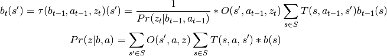

PDHS.and_or_tree.AO_Tree module¶
-
class
PDHS.and_or_tree.AO_Tree.AND_Node(parent=None, children: list=[], upper_bound: float=0.0, lower_bound: float=0.0, action: str=None)[source]¶ Bases:
PDHS.and_or_tree.AO_Tree.NodeSubclass Node to include action choice.
AND_Nodes include an action choice.
Parameters: action (str) – the action choice for this AND_Node.
-
class
PDHS.and_or_tree.AO_Tree.Node(parent=None, children: list=[], upper_bound: float=0.0, lower_bound: float=0.0)[source]¶ Bases:
objectRepresent a Node in an AO_Tree.
Represent, in a general sense, a node of an AND/OR Tree. An AO_Tree is composed of Nodes.
Parameters: - parent (Node) – initial parent of this Node.
- children (list[Node]) – initial list of children of this Node
- upper_bound (float) – initial upper bound of this Node. upper_bound is updated when a new node is expanded in the AO_Tree.
- lower_bound (float) – initial lower bound of this Node. lower_bound is updated when a new node is expanded in the AO_Tree.
-
parent¶ Node
the parent Node of this Node.
-
children¶ list[Node]
children of this Node.
-
upper_bound¶ float
Upper bound for this Node. May be updated when a new node is expanded in the AO_Tree.
-
lower_bound¶ float
Lower bound of this Node. May be updated when a new node is expanded in the AO_Tree.
-
depth¶ int
current depth (measured from root) of this Node.
-
class
PDHS.and_or_tree.AO_Tree.OR_Node(parent: PDHS.and_or_tree.AO_Tree.Node=None, children: list=[], upper_bound: float=0.0, lower_bound: float=0.0, belief_state: list=[], reach_probability: float=0.0, obs_prob: float=0.0)[source]¶ Bases:
PDHS.and_or_tree.AO_Tree.NodeSubclass Node to include belief state.
OR_Nodes include a belief state.
Parameters: - belief_state (list[float]) – the belief state of this node. len(belief_state) must be the same as the number of states in the POMDP.
- reach_probability (float) – the probability that the belief_state of this OR_Node is reached from the initial belief state.
- obs_prob (float) – the probability of the observation that gave rise to this OR_Node.
-
class
PDHS.and_or_tree.AO_Tree.Tree(root, actions: list=[], observations: list=[])[source]¶ Bases:
objectRepresent an AND/OR Tree.
Parameters: - root (OR_Node) – the root node of this AND/OR Tree.
- actions (list[str]) – the list of actions we can expand from an OR_Node.
- observations (list[str]) – the list of observations we can expand from an AND_Node.
-
root¶ OR_Node
the root node of this AND/OR Tree.
-
actions¶ list[str]
the list of actions we can expand from an OR_Node.
-
observations¶ list[str]
the list of observations we can expand from an AND_Node.
-
fringe¶ list[OR_Node]
The fringe nodes that can be chosen for expansion.
-
expand(node, O: dict, T: dict, S: list)[source]¶ Expand a given node in this tree.
Expands a node as described in “Online Planning Algorithms for POMDPs” by Ross, Pineau, et. al, Journal of Artifical Intelligence Research 32, (2008), 663-704.
In particular, implements the function

Note that node is always an OR-node, because after we expand it to all actions (AND_Node), and then immediately expand the actions with every possible observation.
- ..precondition::
- len(node.children) is 0
- ..postcondition::
len(node.children) is not 0 for node in self.fringe:
len(node.children) is 0
Parameters: - node (OR_Node) – the node in this tree to expand.
- O (dict[str, dict[str, dict[str, float]]]) – The observation function that maps a state to an action to an observation to a probability. Represents the conditional probability of observing w given state s and action a.
- T (dict[str, dict[str, dict[str, float]]]) – The transition function that maps a state to an action to a state to a probability. Represents the conditional probability of transitioning from state s to s’ given action a.
- S (list[str]) – The states of the POMDP.